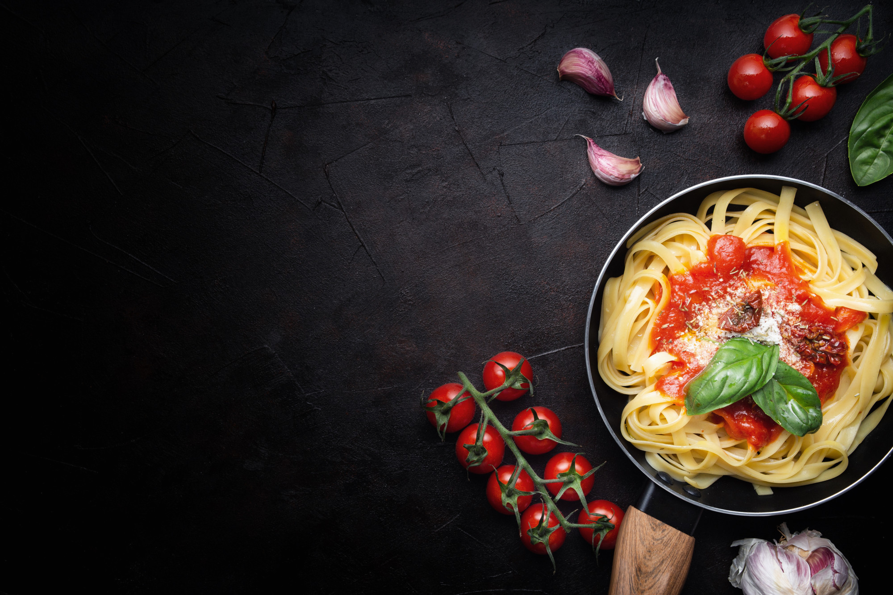

Sabores da Itália

Macarronada
Ingredientes
1 pacote de macarrão tipo espaguete (500g)
2 colheres (sopa) de azeite
5 tomates maduros, sem pele e sem sementes, cortados em pedaços grandes
2 sticks de MAGGI® MEU SEGREDO® 7 VEGETAIS
1 colher (sopa) de manjericão fresco picado
2 colheres (sopa) de queijo parmesão ralado
Modo de Preparo
- Cozinhe o macarrão em água fervente e sal, até que fique 'al dente'.
- Enquanto isso, em uma panela, aqueça o azeite, adicione os tomates, o MAGGI MEU SEGREDO e refogue
ligeiramente. Junte o manjericão e misture.
- Escorra o macarrão, coloque em um recipiente refratário e adicione o refogado de tomates.
- Polvilhe o queijo ralado e sirva a seguir.
Pizza

1 kg de farinha italiana
600 ml de água filtrada
10G fermento biológico seco
30G de sal
20 A 30ML de azeite
PARA O MOLHO
Sal
Pomodoro de tomates italianos
Azeite
Manjericão
PARA O RECHEIO
Muçarela de búfala
Folhas de manjericão